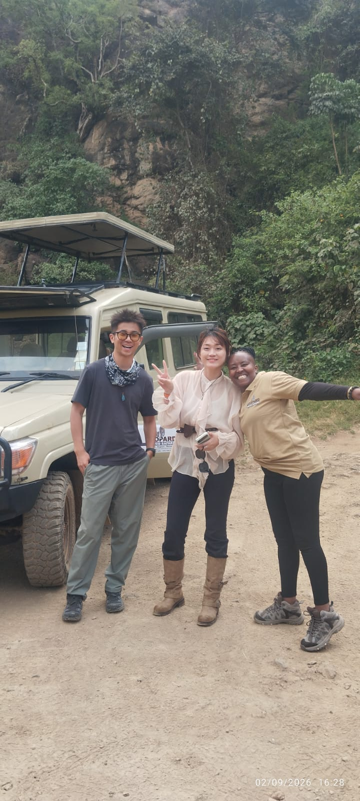
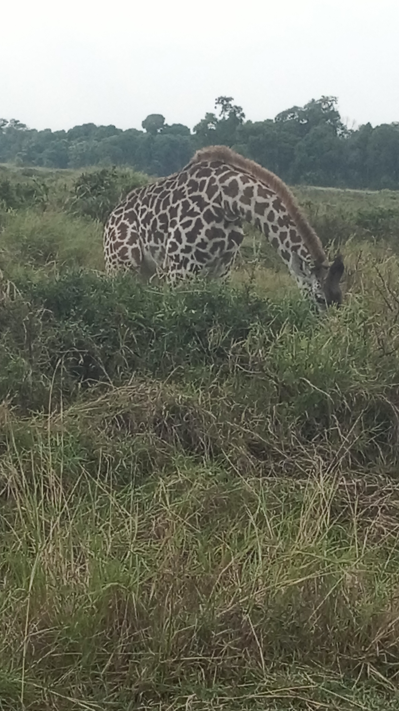
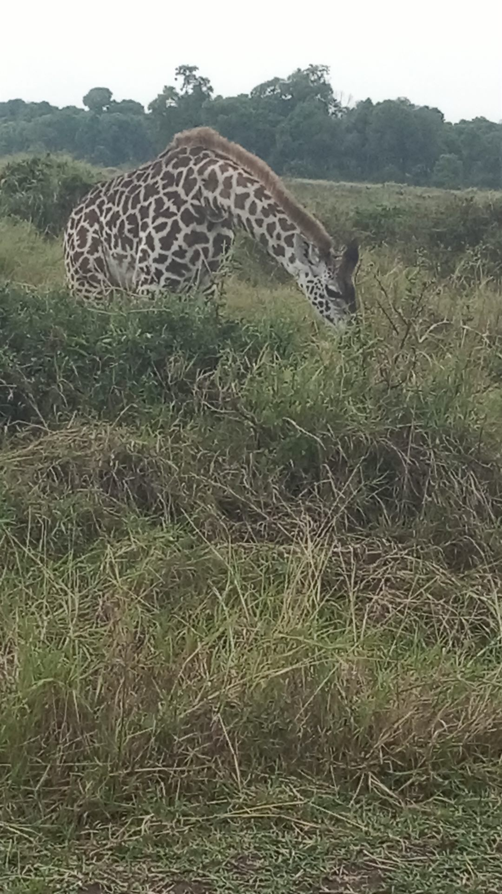
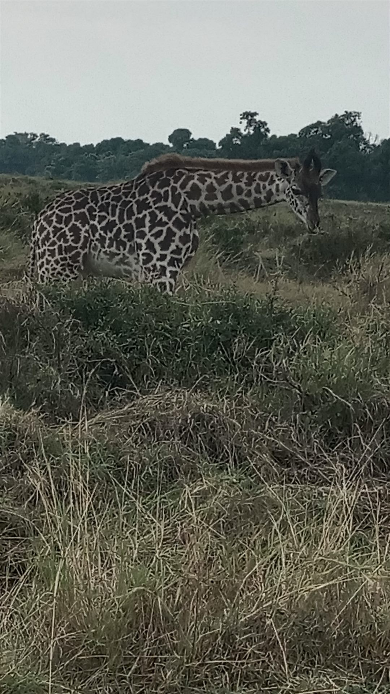
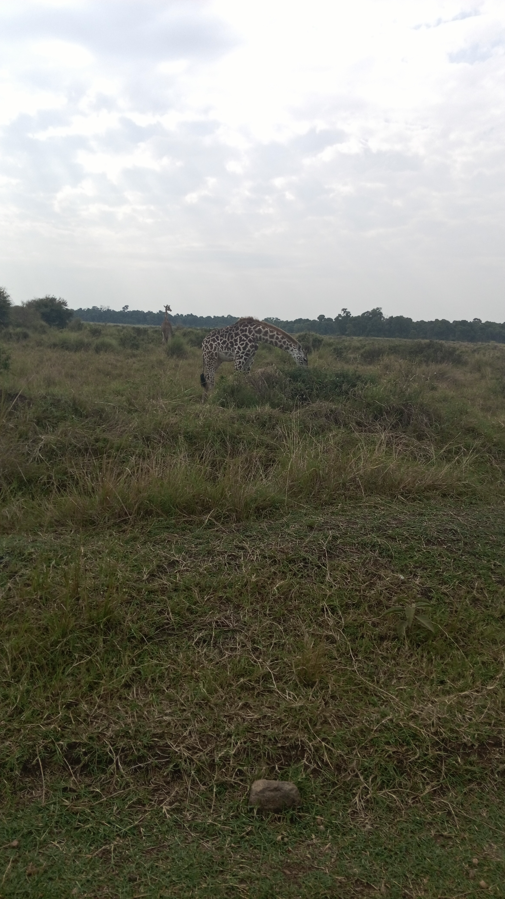

Experiences
PHOTO GALLERY
Six dimensions of African travel, each one a doorway to a deeper encounter with Kenya and the continent.
01 —
SAFARI & WILDLIFE
Track the Big Five across Kenya's greatest reserves. From the Great Migration in the Maasai Mara to elephant herds beneath Kilimanjaro, every drive is guided by trackers who read the land like a story.


02 —
CULTURE & HERITAGE
Step inside living traditions. Meeting beadwork and carving cooperatives, sharing meals with Maasai and Samburu families, and listening to stories carried across generations.



03 —
NATURE & ADVENTURE
From the thunder of Victoria Falls to gorilla trekking in Bwindi's ancient rainforest. Active days, rare landscapes, and the kind of scenery you never stop photographing.




04 —
CONSERVATION & COMMUNITY
Travel that gives back. Every journey with us supports the people who call these landscapes home and the projects protecting Kenya's natural heritage for the next generation.

05 —
INDIGENOUS & SPIRITUAL JOURNEYS
Quiet, respectful encounters with spiritual traditions and ancestral wisdom — dawn rituals, sacred landscapes, and guides who share the meaning behind what you see.

06 —
CUSTOMIZED TRAVEL
Your journey, designed around you. Private vehicles, flexible pacing, and routes built around what you love — from a weekend escape to a three-week expedition across the continent.